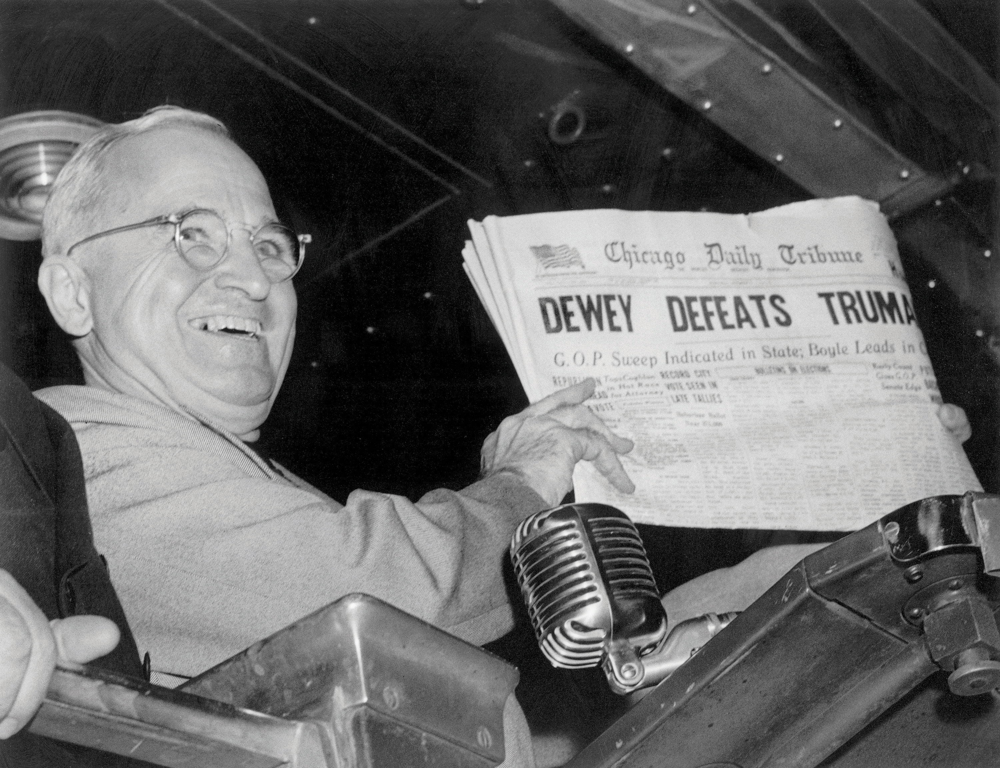

Figure 4.1

The two major newspapers, The Wall Street Journal and The New York Times, battle for their place in the print world.
On April 26, 2010, Wired magazine proclaimed that a “clash of the titans” between two major newspapers, The Wall Street Journal and The New York Times, was about to take place in the midst of an unprecedented downward spiral for the print medium.Eliot Van Burskirk, “Print War Between NYT and WSJ Is Really About Digital,” Wired, April 26, 2010, http://www.wired.com/epicenter/2010/04/print-war-between-nyt-and-wsj-is-really-about-digital. Rupert Murdoch, owner of The Wall Street Journal, had announced that his paper was launching a new section, one covering local stories north of Wall Street, something that had been part of The New York Times’ focus since it first began over a century before. New York Times Chairman Arthur Sultzberger Jr. and CEO Janet Robinson pertly responded to the move, welcoming the new section and acknowledging the difficulties a startup can face when competing with the well-established New York Times.Eliot Van Burskirk, “Print War Between NYT and WSJ Is Really About Digital,” Wired, April 26, 2010, http://www.wired.com/epicenter/2010/04/print-war-between-nyt-and-wsj-is-really-about-digital.
Despite The New York Times’ droll response, Murdoch’s decision to cover local news indeed presented a threat to the newspaper, particularly as the two publications continue their respective moves from the print to the online market. In fact, some believe that The Wall Street Journal’s decision to launch the new section has very little to do with local coverage and everything to do with the Internet. Newspapers are in a perilous position: Traditional readership is declining even as papers are struggling to create a profitable online business model. Both The Wall Street Journal and The New York Times are striving to remain relevant as competition is increasing and the print medium is becoming unprofitable.
In light of the challenges facing the newspaper industry, The Wall Street Journal’s new section may have a potentially catastrophic effect on The New York Times. Wired magazine described the decision, calling it “two-pronged” to “starve the enemy and capture territory.”Eliot Van Burskirk, “Print War Between NYT and WSJ Is Really About Digital,” Wired, April 26, 2010, http://www.wired.com/epicenter/2010/04/print-war-between-nyt-and-wsj-is-really-about-digital. By offering advertising space at a discount in the new Metro section, The Journal would make money while partially cutting The Times off from some of its primary support. Wired magazine also noted that the additional material would be available to subscribers through the Internet, on smartphones, and on the iPad.Eliot Van Burskirk, “Print War Between NYT and WSJ Is Really About Digital,” Wired, April 26, 2010, http://www.wired.com/epicenter/2010/04/print-war-between-nyt-and-wsj-is-really-about-digital.
Attracting advertising revenue from The New York Times may give The Wall Street Journal the financial edge it needs to lead in the online news industry. As newspapers move away from print publications to online publications, a strong online presence may secure more readers and, in turn, more advertisers—and thus more revenue—in a challenging economic climate.
This emerging front in the ongoing battle between two of the country’s largest newspapers reveals a problem the newspaper industry has been facing for sometime. New York has long been a battleground for other newspapers, but before Murdoch’s decision, these two papers coexisted peacefully for over 100 years, serving divergent readers by focusing on different stories. However, since the invention of radio, newspapers have worried about their future. Even though readership has been declining since the 1950s, the explosion of the Internet and the resulting accessibility of online news has led to an unprecedented drop in subscriptions since the beginning of the 21st century. Also hit hard by the struggling economy’s reluctant advertisers, most newspapers have had to cut costs. Some have reinvented their style to appeal to new audiences. Some, however, have simply closed. As this struggle for profit continues, it’s no surprise that The Wall Street Journal is trying to outperform The New York Times. But how did newspapers get to this point? This chapter provides historical context of the newspaper medium and offers an in-depth examination of journalistic styles and trends to illuminate the mounting challenges for today’s industry.
Over the course of its long and complex history, the newspaper has undergone many transformations. Examining newspapers’ historical roots can help shed some light on how and why the newspaper has evolved into the multifaceted medium that it is today. Scholars commonly credit the ancient Romans with publishing the first newspaper, Acta Diurna, or daily doings, in 59 BCE. Although no copies of this paper have survived, it is widely believed to have published chronicles of events, assemblies, births, deaths, and daily gossip.
In 1566, another ancestor of the modern newspaper appeared in Venice, Italy. These avisi, or gazettes, were handwritten and focused on politics and the military conflicts. However, the absence of printing-press technology greatly limited the circulation for both the Acta Diurna and the Venetian papers.
Figure 4.2
Johannes Gutenberg’s printing press exponentially increased the rate at which printed materials could be reproduced.
Johannes Gutenberg’s printing press drastically changed the face of publishing. In 1440, Gutenberg invented a movable-type press that permitted the high-quality reproduction of printed materials at a rate of nearly 4,000 pages per day, or 1,000 times more than could be done by a scribe by hand. This innovation drove down the price of printed materials and, for the first time, made them accessible to a mass market. Overnight, the new printing press transformed the scope and reach of the newspaper, paving the way for modern-day journalism.
The first weekly newspapers to employ Gutenberg’s press emerged in 1609. Although the papers—Relations: Aller Furnemmen, printed by Johann Carolus, and Aviso Relations over Zeitung, printed by Lucas Schulte—did not name the cities in which they were printed to avoid government persecution, their approximate location can be identified because of their use of the German language. Despite these concerns over persecution, the papers were a success, and newspapers quickly spread throughout Central Europe. Over the next 5 years, weeklies popped up in Basel, Frankfurt, Vienna, Hamburg, Berlin, and Amsterdam. In 1621, England printed its first paper under the title Corante, or weekely newes from Italy, Germany, Hungary, Poland, Bohemia, France and the Low Countreys. By 1641, a newspaper was printed in almost every country in Europe as publication spread to France, Italy, and Spain.
Figure 4.3
Newspapers are the descendants of the Dutch corantos and the German pamphlets of the 1600s.
These early newspapers followed one of two major formats. The first was the Dutch-style corantos, a densely packed two- to four-page paper, while the second was the German-style pamphlet, a more expansive 8- to 24-page paper. Many publishers began printing in the Dutch format, but as their popularity grew, they changed to the larger German style.
Because many of these early publications were regulated by the government, they did not report on local news or events. However, when civil war broke out in England in 1641, as Oliver Cromwell and Parliament threatened and eventually overthrew King Charles I, citizens turned to local papers for coverage of these major events. In November 1641, a weekly paper titled The Heads of Severall Proceedings in This Present Parliament began focusing on domestic news.Moira Goff, “Early History of the English Newspaper,” 17th-18th Century Burney Collection Newspapers, Gale, 2007, http://find.galegroup.com/bncn/topicguide/bbcn_03.htm. The paper fueled a discussion about the freedom of the press that was later articulated in 1644 by John Milton in his famous treatise AreopagiticaJohn Milton’s 1644 treatise that criticized the British Parliament’s regulation of texts, which paved the way for the freedom of the press..
Figure 4.4
John Milton’s 1644 Areopagitica, which criticized the British Parliament’s role in regulating texts and helped pave the way for the freedom of the press.
Although the Areopagitica focused primarily on Parliament’s ban on certain books, it also addressed newspapers. Milton criticized the tight regulations on their content by stating, “[w]ho kills a man kills a reasonable creature, God’s image; but he who destroys a good book, kills reason itself, kills the image of God, as it were in the eye.”John Milton, Areopagitica, 1644, http://oll.libertyfund.org/index.php?option=com_content&task=view&id=23&Itemid=275. Despite Milton’s emphasis on texts rather than on newspapers, the treatise had a major effect on printing regulations. In England, newspapers were freed from government control, and people began to understand the power of free press.
Papers took advantage of this newfound freedom and began publishing more frequently. With biweekly publications, papers had additional space to run advertisements and market reports. This changed the role of journalists from simple observers to active players in commerce, as business owners and investors grew to rely on the papers to market their products and to help them predict business developments. Once publishers noticed the growing popularity and profit potential of newspapers, they founded daily publications. In 1650, a German publisher began printing the world’s oldest surviving daily paper, Einkommende Zeitung, and an English publisher followed suit in 1702 with London’s Daily Courant. Such daily publications, which employed the relatively new format of headlines and the embellishment of illustrations, turned papers into vital fixtures in the everyday lives of citizens.
Newspapers did not come to the American colonies until September 25, 1690, when Benjamin Harris printed Public Occurrences, Both FORREIGN and DOMESTICK. Before fleeing to America for publishing an article about a purported Catholic plot against England, Harris had been a newspaper editor in England. The first article printed in his new colonial paper stated, “[t]he Christianized Indians in some parts of Plimouth, have newly appointed a day of thanksgiving to God for his Mercy.”Benjamin Harris, Public Occurrences, Both FORREIGN and DOMESTICK, September 25, 1690. The other articles in Public Occurrences, however, were in line with Harris’s previously more controversial style, and the publication folded after just one issue.
Fourteen years passed before the next American newspaper, The Boston News-Letter, launched. Fifteen years after that, The Boston Gazette began publication, followed immediately by the American Weekly Mercury in Philadelphia. Trying to avoid following in Harris’s footsteps, these early papers carefully eschewed political discussion to avoid offending colonial authorities. After a lengthy absence, politics reentered American papers in 1721, when James Franklin published a criticism of smallpox inoculations in the New England Courant. The following year, the paper accused the colonial government of failing to protect its citizens from pirates, which landed Franklin in jail.
After Franklin offended authorities once again for mocking religion, a court dictated that he was forbidden “to print or publish The New England Courant, or any other Pamphlet or Paper of the like Nature, except it be first Supervised by the Secretary of this Province.”Massachusetts Historical Society, “Silence DoGood: Benjamin Franklin in the New England Courant,” http://www.masshist.org/online/silence_dogood/essay.php?entry_id=204. Immediately following this order, Franklin turned over the paper to his younger brother, Benjamin. Benjamin Franklin, who went on to become a famous statesman and who played a major role in the American Revolution, also had a substantial impact on the printing industry as publisher of The Pennsylvania Gazette and the conceiver of subscription libraries.
Figure 4.5

The New York Weekly Journal founder John Peter Zenger brought controversial political discussion to the New York press.
Boston was not the only city in which a newspaper discussed politics. In 1733, John Peter Zenger founded The New York Weekly Journal. Zenger’s paper soon began criticizing the newly appointed colonial governor, William Cosby, who had replaced members of the New York Supreme Court when he could not control them. In late 1734, Cosby had Zenger arrested, claiming that his paper contained “divers scandalous, virulent, false and seditious reflections.”Archiving Early America, “Peter Zenger and Freedom of the Press,” http://www.earlyamerica.com/earlyamerica/bookmarks/zenger/. Eight months later, prominent Philadelphia lawyer Andrew Hamilton defended Zenger in an important trial. Hamilton compelled the jury to consider the truth and whether or not what was printed was a fact. Ignoring the wishes of the judge, who disapproved of Zenger and his actions, the jury returned a not guilty verdict to the courtroom after only a short deliberation. Zenger’s trial resulted in two significant movements in the march toward freedom of the press. First, the trial demonstrated to the papers that they could potentially print honest criticism of the government without fear of retribution. Second, the British became afraid that an American jury would never convict an American journalist.
With Zenger’s verdict providing more freedom to the press and as some began to call for emancipation from England, newspapers became a conduit for political discussion. More conflicts between the British and the colonists forced papers to pick a side to support. While a majority of American papers challenged governmental authorities, a small number of Loyalist papers, such as James Rivington’s New York Gazetteer, gave voice to the pro-British side. Throughout the war, newspapers continued to publish information representing opposing viewpoints, and the partisan press was born. After the revolution, two opposing political parties—the Federalists and the Republicans—emerged, giving rise to partisan newspapers for each side.
In 1791, the nascent United States of America adopted the First Amendment as part of the Bill of Rights. This act states that “Congress shall make no law respecting an establishment of religion, or prohibiting the free exercise thereof; or abridging the freedom of speech, or of the press; or the right of the people peaceable to assemble, and to petition the government for a redress of grievances.”Cornell University Law School, “Bill of Rights,” http://topics.law.cornell.edu/constitution/billofrights. In this one sentence, U.S. law formally guaranteed freedom of press.
However, as a reaction to harsh partisan writing, in 1798, Congress passed the Sedition Act, which declared that any “writing, printing, uttering, or publishing any false, scandalous and malicious writing or writings against the government of the United States” was punishable by fine and imprisonment.Constitution Society, “Sedition Act, (July 14, 1798),” http://www.constitution.org/rf/sedition_1798.htm. When Thomas Jefferson was elected president in 1800, he allowed the Sedition Act to lapse, claiming that he was lending himself to “a great experiment … to demonstrate the falsehood of the pretext that freedom of the press is incompatible with orderly government.”University of Virginia, “Thomas Jefferson on Politics & Government,” http://etext.virginia.edu/jefferson/quotations/jeff1600.htm. This free-press experiment has continued to modern times.
As late as the early 1800s, newspapers were still quite expensive to print. Although daily papers had become more common and gave merchants up-to-date, vital trading information, most were priced at about 6 cents a copy—well above what artisans and other working-class citizens could afford. As such, newspaper readership was limited to the elite.
All that changed in September 1833 when Benjamin Day created The Sun. Printed on small, letter-sized pages, The Sun sold for just a penny. With the Industrial Revolution in full swing, Day employed the new steam-driven, two-cylinder press to print The Sun. While the old printing press was capable of printing approximately 125 papers per hour, this technologically improved version printed approximately 18,000 copies per hour. As he reached out to new readers, Day knew that he wanted to alter the way news was presented. He printed the paper’s motto at the top of every front page of The Sun: “The object of this paper is to lay before the public, at a price within the means of every one, all the news of the day, and at the same time offer an advantageous medium for advertisements.”Paul Starr, The Creation of the Media: Political Origins of Modern Communications (New York: Basic Books, 2004), 131.
The Sun sought out stories that would appeal to the new mainstream consumer. As such, the paper primarily published human-interest stories and police reports. Additionally, Day left ample room for advertisements. Day’s adoption of this new format and industrialized method of printing was a huge success. The Sun became the first paper to be printed by what became known as the penny pressA newspaper format popular in the 1830s, printed on small paper sizes with a fast printing press and sold for one penny.. Prior to the emergence of the penny press, the most popular paper, New York City’s Courier and Enquirer, had sold 4,500 copies per day. By 1835, The Sun sold 15,000 copies per day.
Figure 4.6

Benjamin Day’s Sun, the first penny paper. The emergence of the penny press helped turn newspapers into a truly mass medium.
Another early successful penny paper was James Gordon Bennett’s New York Morning Herald, which was first published in 1835. Bennett made his mark on the publishing industry by offering nonpartisan political reporting. He also introduced more aggressive methods for gathering news, hiring both interviewers and foreign correspondents. His paper was the first to send a reporter to a crime scene to witness an investigation. In the 1860s, Bennett hired 63 war reporters to cover the U.S. Civil War. Although the Herald initially emphasized sensational news, it later became one of the country’s most respected papers for its accurate reporting.
Another major historical technological breakthrough for newspapers came when Samuel Morse invented the telegraph. Newspapers turned to emerging telegraph companies to receive up-to-date news briefs from cities across the globe. The significant expense of this service led to the formation of the Associated Press (AP) in 1846 as a cooperative arrangement of five major New York papers: the New York Sun, the Journal of Commerce, the Courier and Enquirer, the New York Herald, and the Express. The success of the Associated Press led to the development of wire services between major cities. According to the AP, this meant that editors were able to “actively collect news as it [broke], rather than gather already published news.”Associated Press, “AP History,” http://www.ap.org/pages/about/history/history_first.html. This collaboration between papers allowed for more reliable reporting, and the increased breadth of subject matter lent subscribing newspapers mass appeal for not only upper- but also middle- and working-class readers.
In the late 1800s, New York World publisher Joseph Pulitzer developed a new journalistic style that relied on an intensified use of sensationalismThe use of crime, violence, emotion, and sex in headlines to sell papers.—stories focused on crime, violence, emotion, and sex. Although he made major strides in the newspaper industry by creating an expanded section focusing on women and by pioneering the use of advertisements as news, Pulitzer relied largely on violence and sex in his headlines to sell more copies. Ironically, journalism’s most prestigious award is named for him. His New York World became famous for such headlines as “Baptized in Blood” and “Little Lotta’s Lovers.”Irving E. Fang, A History of Mass Communication: Six Information Revolutions (Boston: Focal PressUSA, 1997), 103. This sensationalist style served as the forerunner for today’s tabloidsWeekly or biweekly journals that focus on entertainment or local issues. These papers typically sensationalize stories.. Editors relied on shocking headlines to sell their papers, and although investigative journalism was predominant, editors often took liberties with how the story was told. Newspapers often printed an editor’s interpretation of the story without maintaining objectivity.
At the same time Pulitzer was establishing the New York World, William Randolph Hearst—an admirer and principal competitor of Pulitzer—took over the New York Journal. Hearst’s life partially inspired the 1941 classic film Citizen Kane. The battle between these two major New York newspapers escalated as Pulitzer and Hearst attempted to outsell one another. The papers slashed their prices back down to a penny, stole editors and reporters from each other, and filled their papers with outrageous, sensationalist headlines. One conflict that inspired particularly sensationalized headlines was the Spanish-American War. Both Hearst and Pulitzer filled their papers with huge front-page headlines and gave bloody—if sometimes inaccurate—accounts of the war. As historian Richard K. Hines writes, “The American Press, especially ‘yellow presses’ such as William Randolph Hearst’s New York Journal [and] Joseph Pulitzer’s New York World … sensationalized the brutality of the reconcentrado and the threat to American business interests. Journalists frequently embellished Spanish atrocities and invented others.”Richard K. Hines, “‘First to Respond to Their Country’s Call’: The First Montana Infantry and the Spanish-American War and Philippine Insurrection, 1898–1899,” Montana: The Magazine of Western History 52, no. 3 (Autumn 2002): 46.
As the publishers vied for readership, an entertaining new element was introduced to newspapers: the comic strip. In 1896, Hearst’s New York Journal published R. F. Outcault’s the Yellow Kid in an attempt to “attract immigrant readers who otherwise might not have bought an English-language paper.”Lisa Yaszek, “‘Them Damn Pictures’: Americanization and the Comic Strip in the Progressive Era,” Journal of American Studies 28, no. 1 (1994): 24. Readers rushed to buy papers featuring the successful yellow-nightshirt-wearing character. The cartoon “provoked a wave of ‘gentle hysteria,’ and was soon appearing on buttons, cracker tins, cigarette packs, and ladies’ fans—and even as a character in a Broadway play.”Lisa Yaszek, “‘Them Damn Pictures’: Americanization and the Comic Strip in the Progressive Era,” Journal of American Studies 28, no. 1 (1994): 30. Another effect of the cartoon’s popularity was the creation of the term yellow journalismMade famous by Pulitzer and Hearst, this style of journalism uses sensationalism, misleading stories, and distorted images to boost sales. to describe the types of papers in which it appeared.
Figure 4.7

R. F. Outcault’s the Yellow Kid, first published in William Randolf Hearst’s New York Journal in 1896.
Pulitzer responded to the success of the Yellow Kid by introducing stunt journalism. The publisher hired journalist Elizabeth Cochrane, who wrote under the name Nellie Bly, to report on aspects of life that had previously been ignored by the publishing industry. Her first article focused on the New York City Lunatic Asylum on Blackwell Island. Bly feigned insanity and had herself committed to the infamous asylum. She recounted her experience in her first article, “Ten Days in a Madhouse.” “It was a brilliant move. Her madhouse performance inaugurated the performative tactic that would become her trademark reporting style.”Jean Marie Lutes, “Into the Madhouse with Nellie Bly: Girl Stunt Reporting in Late Nineteenth-Century America,” American Quarterly 54, no. 2 (2002): 217. Such articles brought Bly much notoriety and fame, and she became known as the first stunt journalist. Although stunts such as these were considered lowbrow entertainment and female stunt reporters were often criticized by more traditional journalists, Pulitzer’s decision to hire Bly was a huge step for women in the newspaper business. Bly and her fellow stunt reporters “were the first newspaperwomen to move, as a group, from the women’s pages to the front page, from society news into political and criminal news.”Jean Marie Lutes, “Into the Madhouse with Nellie Bly: Girl Stunt Reporting in Late Nineteenth-Century America,” American Quarterly 54, no. 2 (2002): 220.
Despite the sometimes questionable tactics of both Hearst and Pulitzer, each man made significant contributions to the growing journalism industry. By 1922, Hearst, a ruthless publisher, had created the country’s largest media-holding company. At that time, he owned 20 daily papers, 11 Sunday papers, 2 wire services, 6 magazines, and a newsreel company. Likewise, toward the end of his life, Pulitzer turned his focus to establishing a school of journalism. In 1912, a year after his death and 10 years after Pulitzer had begun his educational campaign, classes opened at the Columbia University School of Journalism. At the time of its opening, the school had approximately 100 students from 21 countries. Additionally, in 1917, the first Pulitzer Prize was awarded for excellence in journalism.
Please respond to the following writing prompts. Each response should be a minimum of one paragraph.
Location, readership, political climate, and competition all contribute to rapid transformations in journalistic models and writing styles. Over time, however, certain styles—such as sensationalism—have faded or become linked with less serious publications, like tabloids, while others have developed to become prevalent in modern-day reporting. This section explores the nuanced differences among the most commonly used models of journalism.
In the late 1800s, a majority of publishers believed that they would sell more papers by reaching out to specific groups. As such, most major newspapers employed a partisan approach to writing, churning out political stories and using news to sway popular opinion. This all changed in 1896 when a then-failing paper, The New York Times, took a radical new approach to reporting: employing objectivityImpartiality in writing., or impartiality, to satisfy a wide range of readers.
At the end of the 19th century, The New York Times found itself competing with the papers of Pulitzer and Hearst. The paper’s publishers discovered that it was nearly impossible to stay afloat without using the sensationalist headlines popularized by its competitors. Although The New York Times publishers raised prices to pay the bills, the higher charge led to declining readership, and soon the paper went bankrupt. Adolph Ochs, owner of the once-failing Chattanooga Times, took a gamble and bought The New York Times in 1896. On August 18 of that year, Ochs made a bold move and announced that the paper would no longer follow the sensationalist style that made Pulitzer and Hearst famous, but instead would be “clean, dignified, trustworthy and impartial.”“Adolph S. Ochs Dead at 77; Publisher of Times Since 1896,” New York Times, April 9, 1935, http://www.nytimes.com/learning/general/onthisday/bday/0312.html.
This drastic change proved to be a success. The New York Times became the first of many papers to demonstrate that the press could be “economically as well as ethically successful.”“Adolph S. Ochs Dead at 77; Publisher of Times Since 1896,” New York Times, April 9, 1935, http://www.nytimes.com/learning/general/onthisday/bday/0312.html. With the help of managing editor Carr Van Anda, the new motto “All the News That’s Fit to Print,” and lowered prices, The New York Times quickly turned into one of the most profitable impartial papers of all time. Since the newspaper’s successful turnaround, publications around the world have followed The New York Times’ objective journalistic style, demanding that reporters maintain a neutral voice in their writing.
One commonly employed technique in modern journalism is the inverted pyramid styleA journalistic style in which the most important information is placed in the lead paragraph, with additional information appearing in order of importance.. This style requires objectivity and involves structuring a story so that the most important details are listed first for ease of reading. In the inverted pyramid format, the most fundamental facts of a story—typically the who, what, when, where, and why—appear at the top in the lead paragraph, with nonessential information in subsequent paragraphs. The style arose as a product of the telegraph. The inverted pyramid proved useful when telegraph connections failed in the middle of transmission; the editor still had the most important information at the beginning. Similarly, editors could quickly delete content from the bottom up to meet time and space requirements.Chip Scanlan, “Writing from the Top Down: Pros and Cons of the Inverted Pyramid,” Poynter, June 20, 2003, http://www.poynter.org/how-tos/newsgathering-storytelling/chip-on-your-shoulder/12754/writing-from-the-top-down-pros-and-cons-of-the-inverted-pyramid/.
The reason for such writing is threefold. First, the style is helpful for writers, as this type of reporting is somewhat easier to complete in the short deadlines imposed on journalists, particularly in today’s fast-paced news business. Second, the style benefits editors who can, if necessary, quickly cut the story from the bottom without losing vital information. Finally, the style keeps in mind traditional readers, most of who skim articles or only read a few paragraphs, but they can still learn most of the important information from this quick read.
Figure 4.8
During the 1920s, objective journalism fell under critique as the world became more complex. Even though The New York Times continued to thrive, readers craved more than dry, objective stories. In 1923, Time magazine launched as the first major publication to step away from simple objectivity to try to provide readers with a more analytical interpretation of the news. As Time grew, people at some other publications took notice, and slowly editors began rethinking how they might reach out to readers in an increasingly interrelated world.
During the 1930s, two major events increased the desire for a new style of journalism: the Great Depression and the Nazi threat to global stability. Readers were no longer content with the who, what, where, when, and why of objective journalism. Instead, they craved analysis and a deeper explanation of the chaos surrounding them. Many papers responded with a new type of reporting that became known as interpretive journalismA style of writing that goes beyond providing basic facts to include context and analysis of an event or issue..
Interpretive journalism, following Time’s example, has grown in popularity since its inception in the 1920s and 1930s, and journalists use it to explain issues and to provide readers with a broader context for the stories that they encounter. According to Brant Houston, the executive director of Investigative Reporters and Editors Inc., an interpretive journalist “goes beyond the basic facts of an event or topic to provide context, analysis, and possible consequences.”Brant Houston, “Interpretive Journalism,” The International Encyclopedia of Communication, 2008, http://www.blackwellreference.com/public/tocnode?id=g9781405131995_chunk_g978140513199514_ss82-1. When this new style was first used, readers responded with great interest to the new editorial perspectives that newspapers were offering on events. But interpretive journalism posed a new problem for editors: the need to separate straight objective news from opinions and analysis. In response, many papers in the 1930s and 1940s “introduced weekend interpretations of the past week’s events … and interpretive columnists with bylinesThe credit line identifying the author of the article..”Stephen J. A. Ward, “Journalism Ethics,” in The Handbook of Journalism Studies, ed. Karin Wahl-Jorgensen and Thomas Hanitzsch (New York: Routledge, 2008): 298. As explained by Stephen J. A. Ward in his article, “Journalism Ethics,” the goal of these weekend features was to “supplement objective reporting with an informed interpretation of world events.”Stephen J. A. Ward, “Journalism Ethics,” in The Handbook of Journalism Studies, ed. Karin Wahl-Jorgensen and Thomas Hanitzsch (New York: Routledge, 2008): 298.
The 1930s also saw the rise of broadcasting as radios became common in most U.S. households and as sound–picture recordings for newsreels became increasingly common. This broadcasting revolution introduced new dimensions to journalism. Scholar Michael Schudson has noted that broadcast news “reflect[ed] … a new journalistic reality. The journalist, no longer merely the relayer of documents and messages, ha[d] become the interpreter of the news.”Michael Schudson, “The Politics of Narrative Form: The Emergence of News Conventions in Print and Television,” in “Print Culture and Video Culture,” Daedalus 111, no. 4 (1982): 104. However, just as radio furthered the interpretive journalistic style, it also created a new problem for print journalism, particularly newspapers.
Suddenly, free news from the radio offered competition to the pay news of newspapers. Scholar Robert W. McChesney has observed that, in the 1930s, “many elements of the newspaper industry opposed commercial broadcasting, often out of fear of losing ad revenues and circulation to the broadcasters.”Robert W. McChesney, “Media and Democracy: The Emergence of Commercial Broadcasting in the United States, 1927–1935,” in “Communication in History: The Key to Understanding” OAH Magazine of History 6, no. 4 (1992): 37. This fear led to a media war as papers claimed that radio was stealing their print stories. Radio outlets, however, believed they had equal right to news stories. According to Robert W. McChesney, “commercial broadcasters located their industry next to the newspaper industry as an icon of American freedom and culture.”Robert W. McChesney, “Media and Democracy: The Emergence of Commercial Broadcasting in the United States, 1927–1935,” in “Communication in History: The Key to Understanding” OAH Magazine of History 6, no. 4 (1992): 38. The debate had a major effect on interpretive journalism as radio and newspapers had to make decisions about whether to use an objective or interpretive format to remain competitive with each other.
The emergence of television during the 1950s created even more competition for newspapers. In response, paper publishers increased opinion-based articles, and many added what became known as op-edAn abbreviation of opposite the editorial page. An op-ed is an article written by an unaffliated journalist that expresses opinions. pages. An op-ed page—short for opposite the editorial page—features opinion-based columns typically produced by a writer or writers unaffiliated with the paper’s editorial board. As op-ed pages grew, so did interpretive journalism. Distinct from news stories, editors and columnists presented opinions on a regularly basis. By the 1960s, the interpretive style of reporting had begun to replace the older descriptive style.Thomas Patterson, “Why Is News So Negative These Days?” History News Network, 2002, http://hnn.us/articles/1134.html.
Stemming from the development of interpretive journalism, literary journalismA style of journalism that combines journalistic and fictional styles. began to emerge during the 1960s. This style, made popular by journalists Tom Wolfe (formerly a strictly nonfiction writer) and Truman Capote, is often referred to as New Journalism and combines factual reporting with sometimes fictional narration. Literary journalism follows neither the formulaic style of reporting of objective journalism nor the opinion-based analytical style of interpretive journalism. Instead, this art form—as it is often termed—brings voice and character to historical events, focusing on the construction of the scene rather than on the retelling of the facts.
Figure 4.9
The works of Tom Wolfe are some of the best examples of literary journalism of the 1960s.
Tom Wolfe was the first reporter to write in the literary journalistic style. In 1963, while his newspaper, New York’s Herald Tribune, was on strike, Esquire magazine hired Wolfe to write an article on customized cars. Wolfe gathered the facts but struggled to turn his collected information into a written piece. His managing editor, Byron Dobell, suggested that he type up his notes so that Esquire could hire another writer to complete the article. Wolfe typed up a 49-page document that described his research and what he wanted to include in the story and sent it to Dobell. Dobell was so impressed by this piece that he simply deleted the “Dear Byron” at the top of the letter and published the rest of Wolfe’s letter in its entirety under the headline “There Goes (Varoom! Varoom!) That Kandy-Kolored Tangerine-Flake Streamline Baby.” The article was a great success, and Wolfe, in time, became known as the father of new journalism. When he later returned to work at the Herald Tribune, Wolfe brought with him this new style, “fusing the stylistic features of fiction and the reportorial obligations of journalism.”Richard A. Kallan, “Tom Wolfe,” in A Sourcebook of American Literary Journalism: Representative Writers in an Emerging Genre, ed. Thomas B. Connery (Santa Barbara: Greenwood Press, 1992).
Truman Capote responded to Wolfe’s new style by writing In Cold Blood, which Capote termed a “nonfiction novel,” in 1966.George Plimpton, “The Story Behind a Nonfiction Novel,” New York Times, January 16, 1966, http://www.nytimes.com/books/97/12/28/home/capote-interview.html. The tale of an actual murder that had taken place on a Kansas farm some years earlier, the novel was based on numerous interviews and painstaking research. Capote claimed that he wrote the book because he wanted to exchange his “self-creative world … for the everyday objective world we all inhabit.”George Plimpton, “The Story Behind a Nonfiction Novel,” New York Times, January 16, 1966, http://www.nytimes.com/books/97/12/28/home/capote-interview.html. The book was praised for its straightforward, journalistic style. New York Times writer George Plimpton claimed that the book “is remarkable for its objectivity—nowhere, despite his involvement, does the author intrude.”George Plimpton, “The Story Behind a Nonfiction Novel,” New York Times, January 16, 1966, http://www.nytimes.com/books/97/12/28/home/capote-interview.html. After In Cold Blood was finished, Capote criticized Wolfe’s style in an interview, commenting that Wolfe “[has] nothing to do with creative journalism,” by claiming that Wolfe did not have the appropriate fiction-writing expertise.George Plimpton, “The Story Behind a Nonfiction Novel,” New York Times, January 16, 1966, http://www.nytimes.com/books/97/12/28/home/capote-interview.html. Despite the tension between these two writers, today they are remembered for giving rise to a similar style in varying genres.
Although literary journalism certainly affected newspaper reporting styles, it had a much greater impact on the magazine industry. Because they were bound by fewer restrictions on length and deadlines, magazines were more likely to publish this new writing style than were newspapers. Indeed, during the 1960s and 1970s, authors simulating the styles of both Wolfe and Capote flooded magazines such as Esquire and The New Yorker with articles.
Literary journalism also significantly influenced objective journalism. Many literary journalists believed that objectivity limited their ability to critique a story or a writer. Some claimed that objectivity in writing is impossible, as all journalists are somehow swayed by their own personal histories. Still others, including Wolfe, argued that objective journalism conveyed a “limited conception of the ‘facts,’” which “often effected an inaccurate, incomplete story that precluded readers from exercising informed judgment.”Richard A. Kallan, “Tom Wolfe,” in A Sourcebook of American Literary Journalism: Representative Writers in an Emerging Genre, ed. Thomas B. Connery (Santa Barbara: Greenwood Press, 1992).
The reactions of literary journalists to objective journalism encouraged the growth of two more types of journalism: advocacy journalismA style of journalism that expresses a biased position to generate support for a cause. and precision journalismA style of journalism that employs social and behavioral science and research.. Advocacy journalists promote a particular cause and intentionally adopt a biased, nonobjective viewpoint to do so effectively. However, serious advocate journalists adhere to strict guidelines, as “an advocate journalist is not the same as being an activist” according to journalist Sue Careless.Sue Careless, “Advocacy Journalism,” Interim, May 2000, http://www.theinterim.com/2000/may/10advocacy.html. In an article discussing advocacy journalism, Careless contrasted the role of an advocate journalist with the role of an activist. She encourages future advocate journalists by saying the following:
A journalist writing for the advocacy press should practice the same skills as any journalist. You don’t fabricate or falsify. If you do you will destroy the credibility of both yourself as a working journalist and the cause you care so much about. News should never be propaganda. You don’t fudge or suppress vital facts or present half-truths.Sue Careless, “Advocacy Journalism,” Interim, May 2000, http://www.theinterim.com/2000/may/10advocacy.html.
Despite the challenges and potential pitfalls inherent to advocacy journalism, this type of journalism has increased in popularity over the past several years. In 2007, USA Today reporter Peter Johnson stated, “[i]ncreasingly, journalists and talk-show hosts want to ‘own’ a niche issue or problem, find ways to solve it, and be associated with making this world a better place.”Peter Johnson, “More Reporters Embrace an Advocacy Role,” USA Today, March 5, 2007, http://www.usatoday.com/life/television/news/2007-03-05-social-journalism_N.htm. In this manner, journalists across the world are employing the advocacy style to highlight issues they care about.
Television talk-show host and owner of production company Harpo Inc., Oprah Winfrey is one of the most successful, recognizable entrepreneurs of the late-20th and early-21st centuries. Winfrey has long been a news reporter, beginning in the late 1970s as a coanchor of an evening television program. She began hosting her own show in 1984, and as of 2010, the Oprah Winfrey Show is one of the most popular television programs on the air. Winfrey has long used her show as a platform for issues and concerns, making her one of today’s most famous advocacy journalists. While many praise Winfrey for using her celebrity to draw attention to causes she cares about, others criticize her techniques, claiming that she uses the advocacy style for self-promotion. As one critic writes, “I’m not sure how Oprah’s endless self-promotion of how she spent millions on a school in South Africa suddenly makes her ‘own’ the ‘education niche.’ She does own the trumpet-my-own-horn niche. But that’s not ‘journalism.’”Debbie Schlussel, “USA Today Heralds ‘Oprah Journalism,’” Debbie Schlussel (blog), March 6, 2007, http://www.debbieschlussel.com/497/usa-today-heralds-oprah-journalism/.
Yet despite this somewhat harsh critique, many view Winfrey as the leading example of positive advocacy journalism. Sara Grumbles claims in her blog “Breaking and Fitting the Mold”: “Oprah Winfrey obviously practices advocacy journalism…. Winfrey does not fit the mold of a ‘typical’ journalist by today’s standards. She has an agenda and she voices her opinions. She has her own op-ed page in the form of a million dollar television studio. Objectivity is not her strong point. Still, in my opinion she is a journalist.”Sara Grumbles, “Breaking and Fitting the Mold,” Media Chatter (blog), October 3, 2007, http://www.commajor.com/?p=1244.
Regardless of the arguments about the value and reasoning underlying her technique, Winfrey unquestionably practices a form of advocacy journalism. In fact, thanks to her vast popularity, she may be the most compelling example of an advocacy journalist working today.
Precision journalism emerged in the 1970s. In this form, journalists turn to polls and studies to strengthen the accuracy of their articles. Philip Meyer, commonly acknowledged as the father of precision journalism, says that his intent is to “encourage my colleagues in journalism to apply the principles of scientific method to their tasks of gathering and presenting the news.”Philip Meyer, Precision Journalism: A Reporter’s Introduction to Social Science Methods, 4th ed. (Oxford: Rowman & Littlefield Publishers, 2002), vii. This type of journalism adds a new layer to objectivity in reporting, as articles no longer need to rely solely on anecdotal evidence; journalists can employ hard facts and figures to support their assertions. An example of precision journalism would be an article on voting patterns in a presidential election that cites data from exit polls. Precision journalism has become more popular as computers have become more prevalent. Many journalists currently use this type of writing.
Another important distinction within the field of journalism must be made between consensus journalismA style of journalism in which papers promote social and economic harmony, by focusing on shared, often local, issues. and conflict journalismA style of journalism that focuses on events, issues, or experiences outside of the social norm.. Consensus journalism typically takes place in smaller communities, where local newspapers generally serve as a forum for many different voices. Newspapers that use consensus-style journalism provide community calendars and meeting notices and run articles on local schools, events, government, property crimes, and zoning. These newspapers can help build civic awareness and a sense of shared experience and responsibility among readers in a community. Often, business or political leaders in the community own consensus papers.
Conversely, conflict journalism, like that which is presented in national and international news articles in The New York Times, typically occurs in national or metropolitan dailies. Conflict journalists define news in terms of societal discord, covering events and issues that contravene perceived social norms. In this style of journalism, reporters act as watchdogs who monitor the government and its activities. Conflict journalists often present both sides of a story and pit ideas against one another to generate conflict and, therefore, attract a larger readership. Both conflict and consensus papers are widespread. However, because they serve different purposes and reach out to differing audiences, they largely do not compete with each other.
Niche newspapersNewspapers designed to reach a specific target group. represent one more model of newspapers. These publications, which reach out to a specific target group, are rising in popularity in the era of Internet. As Robert Courtemanche, a certified journalism educator, writes, “[i]n the past, newspapers tried to be everything to every reader to gain circulation. That outdated concept does not work on the Internet where readers expect expert, niche content.”Robert Courtemanche, “Newspapers Must Find Their Niche to Survive,” Suite101.com, December 20, 2008, http://newspaperindustry.suite101.com/article.cfm/newspapers_must_find_their_niche_to_survive. Ethnic and minority papers are some of the most common forms of niche newspapers. In the United States—particularly in large cities such as New York—niche papers for numerous ethnic communities flourish. Some common types of U.S. niche papers are papers that cater to a specific ethnic or cultural group or to a group that speaks a particular language. Papers that cover issues affecting lesbians, gay men, and bisexual individuals—like the Advocate—and religion-oriented publications—like The Christian Science Monitor—are also niche papers.
Some niche papers are part of the underground pressPapers that are typically printed with a small budget and that cover stories and events of interest to members of alternative or counter cultures.. Popularized in the 1960s and 1970s as individuals sought to publish articles documenting their perception of social tensions and inequalities, the underground press typically caters to alternative and countercultural groups. Most of these papers are published on small budgets. Perhaps the most famous underground paper is New York’s Pulitzer Prize–winning Village Voice. This newspaper was founded in 1955 and declares its role in the publishing industry by saying:
The Village Voice introduced free-form, high-spirited and passionate journalism into the public discourse. As the nation’s first and largest alternative newsweekly, the Voice maintains the same tradition of no-holds-barred reporting and criticism it first embraced when it began publishing fifty years ago.Village Voice, “About Us,” http://www.villagevoice.com/about/index.
Despite their at-times shoestring budgets, underground papers serve an important role in the media. By offering an alternative perspective to stories and by reaching out to niche groups through their writing, underground-press newspapers fill a unique need within the larger media marketplace. As journalism has evolved over the years, newspapers have adapted to serve the changing demands of readers.
Please respond to the following writing prompts. Each response should be a minimum of one paragraph.
Since 1896, The New York Times has printed the phrase “All the News That’s Fit to Print” as its masthead motto. The phrase itself seems innocent enough, and it has been published for such a long time now that many probably skim over it without giving it a second thought. Yet, the phrase represents an interesting phenomenon in the newspaper industry: control. Papers have long been criticized for the way stories are presented, yet newspapers continue to print—and readers continue to buy them.
In 1997, The New York Times publicly claimed that it was “an independent newspaper, entirely fearless, free of ulterior influence and unselfishly devoted to the public welfare.”Edward S. Herman, “All the News Fit to Print: Structure and Background of the New York Times,” Z Magazine, April 1998, http://www.thirdworldtraveler.com/Herman%20/AllNewsFit_Herman.html. Despite this public proclamation of objectivity, the paper’s publishers have been criticized for choosing which articles to print based on personal financial gain. In reaction to that statement, scholar Edward S. Herman wrote that the issue is that The New York Times “defin[es] public welfare in a manner acceptable to their elite audience and advertisers.”Edward S. Herman, “All the News Fit to Print: Structure and Background of the New York Times,” Z Magazine, April 1998, http://www.thirdworldtraveler.com/Herman%20/AllNewsFit_Herman.html. The New York Times has continually been accused of determining what stories are told. For example, during the 1993 debate over the North American Free Trade Agreement (NAFTA), The New York Times clearly supported the agreement. In doing so, the newspaper exercised editorial control over its publication and the information that went out to readers.
However, The New York Times is not the only newspaper to face accusations of controlling which stories are told. In his review of Read All About It: The Corporate Takeover of America’s Newspapers, Steve Hoenisch, editor of Criticism.com, offers these harsh words about what drives the stories printed in today’s newspaper:
I’ve always thought of daily newspapers as the guardians of our—meaning the public’s—right to know. The guardians of truth, justice, and public welfare and all that. But who am I fooling? America’s daily newspapers don’t belong to us. Nor, for that matter, do they even seek to serve us any longer. They have more important concerns now: appeasing advertisers and enriching stockholders.Steven Hoenisch, “Corporate Journalism,” review of Read All About It: The Corporate Takeover of America’s Newspapers, by James D. Squires, http://www.criticism.com/md/crit1.html#section-Read-All-About-It.
More and more, as readership declines, newspapers must answer to advertisers and shareholders as they choose which stories to report on.
However, editorial control does not end there. Journalists determine not only what stories are told but also how those stories are presented. This issue is perhaps even more delicate than that of selection. Most newspaper readers still expect news to be reported objectively and demand that journalists present their stories in this manner. However, careful public scrutiny can burden journalists, while accusations of controlling information affect their affiliated newspapers. However, this scrutiny takes on importance as the public turns to journalists and newspapers to learn about the world.
Journalists are also expected to hold themselves to high standards of truth and originality. Fabrication and plagiarism are prohibited. If a journalist is caught using these tactics, then his or her career is likely to end for betraying the public’s trust and for damaging the publication’s reputation. For example, The New York Times reporter Jayson Blair lost his job in 2003 when his plagiary and fabrication were discovered, and The New Republic journalist Stephen Glass was fired in 1998 for inventing stories, quotes, and sources.
Despite the critiques of the newspaper industry and its control over information, the majority of newspapers and journalists take their roles seriously. Editors work with journalists to verify sources and to double-check facts so readers are provided accurate information. In this way, the control that journalists and newspapers exert serves to benefit their readers, who can then be assured that articles printed are correct.
Despite the criticism of The New York Times, the famous newspaper has been known to revisit their old stories to provide a new, more balanced view. One such example occurred in 2004 when, in response to criticism on their handling of the Iraq War, The New York Times offered a statement of apology. The apology read as follows:
We have found a number of instances of coverage that was not as rigorous as it should have been. In some cases, information that was controversial then, and seems questionable now, was insufficiently qualified or allowed to stand unchallenged. Looking back, we wish we had been more aggressive in re-examining the claims as new evidence emerged—or failed to emerge.Editorial, “The Times and Iraq,” New York Times, May 26, 2004, http://www.nytimes.com/2004/05/26/international/middleeast/26FTE_NOTE.html.
Although the apology was risky—it essentially admitted guilt in controlling a controversial story—The New York Times demonstrated a commitment to ethical journalism.
One way that journalists control stories for the benefit of the public is by engaging in watchdog journalismIndependent scrutiny by the press of the activities of government, business, and other public institutions to document, question, and investigate those activities to provide the public and officials with timely information on issues of public concern.. This form of journalism provides the public with information about government officials or business owners while holding those officials to high standards of operation. Watchdog journalism is defined as “(1) independent scrutiny by the press of the activities of government, business and other public institutions, with an aim toward (2) documenting, questioning, and investigating those activities, to (3) provide publics and officials with timely information on issues of public concern.”W. Lance Bennett and William Serrin, “The Watchdog Role,” in The Institutions of American Democracy: The Press, ed. Geneva Overholser and Kathleen Hall Jamieson (New York: Oxford University Press, 2005), 169.
One of the most famous examples of watchdog journalism is the role that Bob Woodward and Carl Bernstein of The Washington Post played in uncovering information about the Watergate break-in and scandal that ultimately resulted in President Richard Nixon’s resignation. Newspapers and journalists often laud watchdog journalism, one of the most important functions of newspapers, yet it is difficult to practice because it requires rigorous investigation, which in turn demands more time. Many journalists often try to keep up with news as it breaks, so journalists are not afforded the time to research the information—nor to hone the skills—required to write a watchdog story. “Surviving in the newsroom—doing watchdog stories—takes a great deal of personal and political skill. Reporters must have a sense of guerilla warfare tactics to do well in the newsroom.”W. Lance Bennett and William Serrin, “The Watchdog Role,” in The Institutions of American Democracy: The Press, ed. Geneva Overholser and Kathleen Hall Jamieson (New York: Oxford University Press, 2005), 182.
To be successful, watchdog journalists must investigate stories, ask tough questions, and face the possibility of unpopularity to alert the public to corruption or mismanagement while elevating the public’s expectations of the government. At the same time, readers can support newspapers that employ this style of journalism to encourage the press to engage in the challenging watchdog form of journalism. As scholars have observed, “not surprisingly, watchdog journalism functions best when reporters understand it and news organizations and their audiences support it.”W. Lance Bennett and William Serrin, “The Watchdog Role,” in The Institutions of American Democracy: The Press, ed. Geneva Overholser and Kathleen Hall Jamieson (New York: Oxford University Press, 2005), 185.
Newspapers have control over which stories are told and how those stories are presented. Just as the newspaper industry has changed dramatically over the years, journalistic writing styles have been transformed. Many times, such changes mirrored a trend shift in readership; since the 1950s, however, newspapers have had to compete with television journalism and, more recently, the Internet. Both television and the Internet have profoundly affected newspaper audiences and journalistic styles.
USA Today, founded in 1982 and known for its easy-to-read stories, is but one example of a paper that has altered its style to remain competitive with television and the Internet. In the past, newspapers placed their primary focus on the written word. Although some newspapers still maintain the use of written narration, many papers have shifted their techniques to attract a more television-savvy audience. In the case of USA Today, the emphasis lies on the second track—the visual story—dominated by large images accompanied by short written stories. This emphasis mimics the television presentation format, allowing the paper to cater to readers with short attention spans.
A perhaps unexpected shift in journalistic writing styles that derives from television is the more frequent use of present tense, rather than past tense, in articles. This shift likely comes from television journalism’s tendency to allow a story to develop as it is being told. This subtle but noticeable shift from past to present tense in narration sometimes brings a more dramatic element to news articles, which may attract readers who otherwise turn to television news programs for information.
Like many papers, USA Today has redesigned its image and style to keep up with the sharp immediacy of the Internet and with the entertainment value of television. In fact, the paper’s management was so serious about their desire to compete with television that from 1988 to 1990 they mounted a syndicated television series titled USA Today: The Television Show (later retitled USA Today on TV).“U.S.A Today: The Television Series,” Internet Movie Database, http://www.imdb.com/title/tt0094572/. Despite its short run, the show demonstrated the paper’s focus on reaching out to a visual audience, a core value that it has maintained to this day. Today, USA Today has established itself as a credible and reliable news source, despite its unorthodox approach to journalism.
Please respond to the following writing prompts. Each response should be a minimum of one paragraph.
Popular media such as television and the Internet have forever changed the newspaper industry. To fully understand the impact that current technology is having on the newspaper industry, it is necessary to first examine the current state of the industry.
Although numerous papers exist in the United States, a few major publications dominate circulation and, thus, exert great influence on the newspaper industry. Each of these newspapers has its own unique journalistic and editorial style, relying on different topics and techniques to appeal to its readership.
USA Today currently tops the popularity chart with a daily circulation of 2,281,831.“Top 10 US Newspapers by Circulation,” Newspapers.com, http://www.newspapers.com/top10.html. This national paper’s easy-to-read content and visually focused layout contribute to its high readership numbers. Although the paper does not formally publish on weekends, it does have a partner paper titled USA Weekend. USA Today consists of four sections: news, money, sports, and life; for the ease of its readers, the newspaper color-codes each section. Owned by the Gannett Company, the paper caters to its audience by opting for ease of comprehension over complexity.
Established in the late 1800s, The Wall Street Journal closely trails USA Today, with a circulation of 2,070,498.“Top 10 US Newspapers by Circulation,” Newspapers.com, http://www.newspapers.com/top10.html. In fact, USA Today and The Wall Street Journal have competed for the top circulation spot for many years. An international paper that focuses on business and financial news, The Wall Street Journal primarily uses written narration with few images. Recent changes to its layout, such as adding advertising on the front page and minimizing the size of the paper slightly to save on printing costs, have not dramatically shifted this long-standing focus. The paper runs between 50 and 96 pages per issue and gives its readers up-to-date information on the economy, business, and national and international financial news.
The New York Times is another major publication, with circulation at 1,121,623.“Top 10 US Newspapers by Circulation,” Newspapers.com, http://www.newspapers.com/top10.html. Founded in 1851, the New York City–based paper is owned by the New York Times Company, which also publishes several smaller regional papers. The flagship paper contains three sections: news, opinion, and features. Although its articles tend to be narrative-driven, the paper does include images for many of its articles, creating a balance between the wordier layout of The Wall Street Journal and the highly visual USA Today. The New York Times publishes international stories along with more local stories in sections such as Arts, Theater, and Metro. The paper has also successfully established itself on the Internet, becoming one of the most popular online papers today.
The Los Angeles Times—currently the only West Coast paper to crack the top 10 circulation list—has also contributed much to the newspaper industry. First published in 1881, the California-based paper has a distribution of 907,977.“Top 10 US Newspapers by Circulation,” Newspapers.com, http://www.newspapers.com/top10.html. Perhaps the most unique feature of the paper is its Column One, which focuses on sometimes-bizarre stories meant to engage readers. Known for its investigative journalistic approach, the Los Angeles Times demands that its journalists “provide a rich, nuanced account” of the issues they cover.Los Angeles Times, “L.A. Times Ethics Guidelines,” Readers’ Representative Journal (blog), http://latimesblogs.latimes.com/readers/2007/07/los-angeles-tim.html. By 2010, the paper had won 39 Pulitzer Prizes, including 5 gold medals for public service.Los Angeles Times, “Times’ Pulitzer Prizes,” http://www.latimes.com/about/mediagroup/latimes/la-mediagroup-pulitzers,0,1929905.htmlstory.
First published in 1877, The Washington Post is Washington, DC’s oldest and largest paper, with a daily circulation of 709,997.“Top 10 US Newspapers by Circulation,” Newspapers.com, http://www.newspapers.com/top10.html. According to its editors, the paper aims to be “fair and free and wholesome in its outlook on public affairs and public men.”Washington Post, “General Information: Post Principles,” https://nie.washpost.com/gen_info/principles/index.shtml In this vein, The Washington Post has developed a strong investigative journalism style, perhaps most exemplified by its prominent investigation of the Watergate Scandal.
The paper also holds the principle of printing articles fit “for the young as well as the old.”Washington Post, “General Information: Post Principles,” https://nie.washpost.com/gen_info/principles/index.shtml In 2003, The Washington Post launched a new section called the Sunday Source which targets the 18- to 34-year-old age group in an attempt to increase readership among younger audiences. This weekend supplement section focused on entertainment and lifestyle issues, like style, food, and fashion. Although it ceased publication in 2008, some of its regular features migrated to the regular paper. Like the Los Angeles Times, The Washington Post holds numerous Pulitzer Prizes for journalism.
One other major publication with a significant impact on the newspaper industry is the Chicago Tribune, wielding a circulation of 643,086.“Top 10 US Newspapers by Circulation,” Newspapers.com, http://www.newspapers.com/top10.html. First established in 1847, the paper is often remembered for famously miscalling the 1948 presidential election with the headline of “Dewey Defeats Truman.”
Figure 4.10
The Chicago Tribune’s inaccurate declaration of the results of the tight 1948 presidential election has become one of the most famous headlines of all time.
Despite this error, the Chicago Tribune has become known for its watchdog journalism, including a specific watchdog section for issues facing Chicago, like pollution, politics, and more. It proudly proclaims its commitment “to standing up for your interests and serving as your watchdog in the corridors of power.”Chicago Tribune, “On Guard for Chicago,” http://www.chicagotribune.com/news/chi-on-guard-for-chicago,0,3834517.htmlpage.
Despite major newspapers’ large circulations, newspapers as a whole are experiencing a dramatic decline in both subscribers and overall readership. For example, on February 27, 2009, Denver’s Rocky Mountain News published its final issue after nearly 150 years in print. The front-page article “Goodbye, Colorado” reflected on the paper’s long-standing history with the Denver community, observing that “It is with great sadness that we say goodbye to you today. Our time chronicling the life of Denver and Colorado, the nation and the world, is over.”Rocky Mountain News, “Goodbye, Colorado,” February 7, 2009, http://www.rockymountainnews.com/news/2009/feb/27/goodbye-colorado/.
The story of Rocky Mountain News is neither unique nor entirely unexpected. For nearly a half-century, predictions of the disappearance of print newspapers have been an ongoing refrain. The fear of losing print media began in the 1940s with the arrival of the radio and television. Indeed, the number of daily papers has steadily decreased since the 1940s; in 1990, the number of U.S. dailies was just 1,611. By 2008, that number had further shrunk to 1,408.Newspaper Association of American, “Total Paid Circulation,” http://www.naa.org/TrendsandNumbers/Total-Paid-Circulation.aspx. But the numbers are not as clear-cut as they appear. As one report observed, “The root problems go back to the late 1940s, when the percentage of Americans reading newspapers began to drop. But for years the U.S. population was growing so much that circulation kept rising and then, after 1970s, remained stable.”Project for Excellence in Journalism, “Newspapers: Audience” in The State of the News Media 2004, http://www.stateofthemedia.org/2004/narrative_newspapers_audience.asp?cat=3&media=2. During the 1970s when circulation stopped rising, more women were entering the workforce. By the 1990s when “circulation began to decline in absolute numbers,” the number of women in the workforce was higher than had ever been previously experienced.Project for Excellence in Journalism, “Newspapers: Audience” in The State of the News Media 2004, http://www.stateofthemedia.org/2004/narrative_newspapers_audience.asp?cat=3&media=2. With women at work, there were fewer people at home with leisure time for reading daily papers for their news. This, combined with television journalism’s rising popularity and the emergence of the Internet, meant a significant decrease in newspaper circulation. With newer, more immediate ways to get news, the disconnect between newspapers and consumers deepened.
Compounding the problem is newspapers’ continuing struggle to attract younger readers. Many of these young readers simply did not grow up in households that subscribed to daily papers and so they do not turn to newspapers for information. However, the problem seems to be more complex “than fewer people developing the newspaper habit. People who used to read every day now read less often. Some people who used to read a newspaper have stopped altogether.”Project for Excellence in Journalism, “Newspapers: Audience” in The State of the News Media 2004, http://www.stateofthemedia.org/2004/narrative_newspapers_audience.asp?cat=3&media=2.
Yet the most significant challenge to newspapers is certainly the Internet. As print readership declines, online readership has grown; fast, free access to breaking information contributes to the growing appeal of online news. Despite the increase in online news readers, that growth has not offset the drop in print readership. In 2008, the Pew Research Center conducted a news media consumption survey in which only
39 percent of participants claimed to having read a newspaper (either print or online) the day before, showing a drop from 43 percent in 2006. Meanwhile, readership of print newspapers fell from 34 percent to 25 percent in that time period.Emily Dilling, “Study: Newspaper Readership Down, Despite Online Increase,” Shaping the Future of the Newspaper (blog), March 3, 2009, http://www.sfnblog.com/circulation_and_readership/2009/03/study_newspaper_readership_down_despite.php.
The study also observed that younger generations are primarily responsible for this shift to online reading. “The changes in reader habits seem to be similar amongst both Generation X and Y demographics, where marked increases in consulting online news sources were observed.”Emily Dilling, “Study: Newspaper Readership Down, Despite Online Increase,” Shaping the Future of the Newspaper (blog), March 3, 2009, http://www.sfnblog.com/circulation_and_readership/2009/03/study_newspaper_readership_down_despite.php. Baby boomers and older generations do, for the most part, still rely on printed newspapers for information. Perhaps this distinction between generations is not surprising. Younger readers grew up with the Internet and have developed different expectations about the speed, nature, and cost of information than have older generations. However, this trend suggests that online readership along with the general decline of news readers may make printed newspapers all but obsolete in the near future.
As readership began to decline in the 1970s and newspapers began experiencing greater competition within individual cities, Congress issued the Newspaper Preservation Act1970 Act of U.S. Congress allowing the formation of joint operating agreements between newspapers. authorizing the structure of joint operating agreementsAgreements between multiple newspapers that allow them to share the cost of business, advertising, and circulation operations. (JOAs). The implementation of JOAs means that two newspapers could “share the cost of business, advertising, and circulation operations,” which helped newspapers stay afloat in the face of an ever-shrinking readership.David Milstead, “Newspaper Joint Operating Agreements Are Fading,” Rocky Mountain News, January 22, 2009, http://www.rockymountainnews.com/news/2009/jan/22/newspaper-joas-fading/. The Newspaper Preservation Act also ensured that two competing papers could keep their distinct news divisions but merge their business divisions.
At its peak, 28 newspaper JOAs existed across the United States, but as the industry declines at an increasingly rapid rate, JOAs are beginning to fail. With today’s shrinking pool of readers, two newspapers simply cannot effectively function in one community. In 2009, only nine JOAs continued operations, largely because JOAs “don’t eliminate the basic problem of one newspaper gaining the upper hand in circulation and, hence, advertising revenue.”David Milstead, “Newspaper Joint Operating Agreements Are Fading,” Rocky Mountain News, January 22, 2009, http://www.rockymountainnews.com/news/2009/jan/22/newspaper-joas-fading/. With advertising playing a key role in newspapers’ financial survival, revenue loss is a critical blow. Additionally, “in recent years, of course, the Internet has thrown an even more dramatic wrench into the equation. Classified advertising has migrated to Internet sites like craigslist.org while traditional retail advertisers … can advertise via their own websites.”David Milstead, “Newspaper Joint Operating Agreements Are Fading,” Rocky Mountain News, January 22, 2009, http://www.rockymountainnews.com/news/2009/jan/22/newspaper-joas-fading/. As more advertisers move away from the newspaper industry, more JOAs will likely crumble. The destruction of JOAs will, in turn, result in the loss of more newspapers.
As newspapers diminish in number and as newspaper owners find themselves in financial trouble, a dramatic increase in the consolidation of newspaper ownership has taken place. Today, many large companies own several papers across the country, buying independently owned papers to help them stay afloat. The change has been occurring for some time; in fact, “since 1975, more than two-thirds of independently owned newspapers … have disappeared.”Free Press, “Media Consolidation,” http://www.freepress.net/policy/ownership/consolidation. However, since 2000, newspaper consolidation has increased markedly as more papers are turning over control to larger companies.
In 2002, the 22 largest newspaper chains owned 39 percent of all the newspapers in the country (562 papers). Yet those papers represent 70 percent of daily circulation and 73 percent of Sunday. And their influence appears to be growing. These circulation percentages are a full percentage point higher than 2001.Project for Excellence in Journalism, “Newspapers: Ownership” in The State of the News Media 2004, http://www.stateofthemedia.org/2004/narrative_newspapers_ownership.asp?cat=5&media=2.
Among the 22 companies that own the largest percentage of the papers, four chains stand out: Gannett, the Tribune Company, the New York Times Company, and the McClatchy Company. Not only do these companies each own several papers across the country, but they also enjoy a higher-than-normal profit margin relative to smaller chains.
In addition to consolidation, the decline of print newspapers has brought about several changes in ownership as companies attempt to increase their revenue. In 2007, media mogul Rupert Murdoch’s News Corporation purchased The Wall Street Journal with an unsolicited $5 billion bid, promising to “pour money into the Journal and its website and use his satellite television networks in Europe and Asia to spread Journal content the world over.”Frank Ahrens, “Murdoch Seizes Wall St. Journal in $5 Billion Coup,” Washington Post, August 1, 2007, http://www.washingtonpost.com/wp-dyn/content/article/2007/07/31/AR2007073100896.html. Murdoch has used the buyout to move the paper into the technological world, asking readers and newspapers to embrace change. In 2009, he published an article in The Wall Street Journal assuring his readers that “the future of journalism is more promising than ever—limited only by editors and producers unwilling to fight for their readers and viewers, or government using its heavy hand either to overregulate or subsidize us.”Rupert Murdoch, “Journalism and Freedom,” Wall Street Journal, December 8, 2009, http://online.wsj.com/article/SB10001424052748704107104574570191223415268.html. Murdoch believes that the hope of journalism lies in embracing the changing world and how its inhabitants receive news. Time will tell if he is correct.
Despite changes in power, the consolidation trend is leveling off. Even large chains must cut costs to avoid shuttering papers entirely. In January 2009, the newspaper industry experienced 2,252 layoffs; in total, the U.S. newspaper industry lost 15,114 jobs that year.Rupert Murdoch, “Journalism and Freedom,” Wall Street Journal, December 8, 2009, http://online.wsj.com/article/SB10001424052748704107104574570191223415268.html. With the dual challenges of layoffs and decreasing readership, some in the journalism industry are beginning to explore other options for ownership, such as nonprofit ownership. As one article in the Chronicle of Philanthropy puts it, “[i]t may be time for a more radical reinvention of the daily newspaper. The answer for some newspapers may be to adopt a nonprofit ownership structure that will enable them to seek philanthropic contributions and benefit from tax exemptions.”Vince Stehle, “It’s Time for Newspapers to Become Nonprofit Organizations,” Chronicle of Philanthropy, March 12, 2009, http://gfem.org/node/492.
It is clear that the newspaper industry is on the brink of major change. Over the next several years, the industry will likely continue to experience a complete upheaval brought on by dwindling readership and major shifts in how individuals consume news. As newspapers scramble to find their footing in an ever-changing business, readers adapt and seek out trustworthy information in new ways.
Please respond to the following writing prompts. Each response should be a minimum of one paragraph.
The proliferation of online communication has had a profound effect on the newspaper industry. As individuals turn to the Internet to receive news for free, traditional newspapers struggle to remain competitive and hold onto their traditional readers. However, the Internet’s appeal goes beyond free content. This section delves further into the Internet and its influence on the print industry. The Internet and its role in media are explored in greater detail in Chapter 11 "The Internet and Social Media" of this textbook.
Web logs, or blogsShort for weblog, a blog features news and commentary from one or many authors., have offered a new take on the traditional world of journalism. Blogs feature news and commentary entries from one or more authors. However, journalists differ on whether the act of writing a blog, commonly known as blogging, is, in fact, a form of journalism.
Indeed, many old-school reporters do not believe blogging ranks as formal journalism. Unlike journalists, bloggers are not required to support their work with credible sources. This means that stories published on blogs are often neither verified nor verifiable. As Jay Rosen, New York University journalism professor, writes, “Bloggers are speakers and writers of their own invention, at large in the public square. They’re participating in the great game of influence called public opinion.”Jay Rosen, “Brain Food for BloggerCon,” PressThink (blog), April 16, 2004, http://journalism.nyu.edu/pubzone/weblogs/pressthink/2004/04/16/con_prelude.html. Despite the blurry lines of what constitutes “true” journalism—and despite the fact that bloggers are not held to the same standards as journalists—many people still seek out blogs to learn about news. Thus, blogs have affected the news journalism industry. According to longtime print journalist and blogger Gina Chen, “blogging has changed journalism, but it is not journalism.”Gina Chen, “Is Blogging Journalism?” Save the Media, March 28, 2009, http://savethemedia.com/2009/03/28/is-blogging-journalism/.
Beyond the lack of accountability in blogging, blogs are free from the constraints of journalism in other ways that make them increasingly competitive with traditional print publications. Significantly, Internet publication allows writers to break news as soon as it occurs. Unlike a paper that publishes only once a day, the Internet is constantly accessible, and information is ready at the click of a mouse.
In 1998, the Internet flexed its rising journalistic muscle by breaking a story before any major print publication: the Bill Clinton/Monica Lewinsky scandal. The Drudge Report, an online news website that primarily consists of links to stories, first made the story public, claiming to have learned of the scandal only after Newsweek magazine failed to publish it. On January 18, 1998, the story broke online with the title “Newsweek Kills Story on White House Intern. Blockbuster Report: 23-year-old, Former White House Intern, Sex Relationship with President.” The report gave some details on the scandal, concluding the article with the phrase “The White House was busy checking the Drudge Report for details.”“Original Drudge Reports of Monica Lewinsky Scandal (January 17, 1998),” AustralianPolitics.com, http://australianpolitics.com/usa/clinton/impeachment/drudge.shtml. This act revealed the power of the Internet because of its superiority in timeliness, threatening the relevancy of slower newspapers and news magazines.
Print media also continuously struggle with space constraints, another limit that the Internet is spared. As newspapers contemplate making the transition from print to online editions, several editors see the positive effect of this particular issue. N. Ram, editor-in-chief of The Hindu, claims, “One clear benefit online editions can provide is the scope this gives for accommodating more and longer articles…. There need be no space constraints, as in the print edition.”S. Viswanathan, “Internet Media: Sky’s the Limit,” Hindu, March 28, 2010, http://beta.thehindu.com/opinion/Readers-Editor/article318231.ece. With the endless writing space of the Internet, online writers have the freedom to explore topics more fully, to provide more detail, and to print interviews or other texts in their entirety—opportunities that many print journalists have longed for since newspapers first began publishing.
Online writing also provides a forum for amateurs to enter the professional realm of writing. With cost-cutting forcing newspapers to lay off writers, more and more would-be journalists are turning to the Internet to find ways to enter the field. Interestingly, the blogosphere has launched the careers of journalists who otherwise may never have pursued a career in journalism. For example, blogger Molly Wizenberg founded the blog Orangette because she didn’t know what to do with herself: “The only thing I knew was that, whatever I did, it had to involve food and writing.”Nick Wyke, “Meet the Food Bloggers: Orangette,” Times (London), May 26, 2009, http://www.timesonline.co.uk/tol/life_and_style/food_and_drink/real_food/article6364590.ece. After Orangette became a successful food blog, Wizenberg transitioned into writing for a traditional media outlet: food magazine Bon Appetit.
With declining readership and increasing competition from blogs, most newspapers have embraced the culture shift and have moved to online journalism. For many papers, this has meant creating an online version of their printed paper that readers will have access to from any location, at all times of the day. By 2010, over 10,000 newspapers had gone online. But some smaller papers—particularly those in two-paper communities—have not only started websites but have also ceased publication of their printed papers entirely.
One such example is Seattle’s Post-Intelligencer. In 2009, the newspaper stopped printing, “leaving the rival Seattle Times as the only big daily in town.”David Folkenflik, “Newspapers Wade Into an Online-Only Future,” NPR, March 20, 2009, http://www.npr.org/templates/story/story.php?storyId=102162128. As Steve Swartz, president of Hearst Newspapers and owner of the Post-Intelligencer, commented about the move to online-only printing, “Being the second newspaper in Seattle didn’t work. We are very enthusiastic, however, about this experiment to create a digital-only business in Seattle with a robust community website at its core.”David Folkenflik, “Newspapers Wade Into an Online-Only Future,” NPR, March 20, 2009, http://www.npr.org/templates/story/story.php?storyId=102162128. For the Post-Intelligencer, the move meant a dramatic decrease in its number of staff journalists. The printed version of the paper employed 135 journalists, but the online version, Seattlepi.com, employs only 2 dozen. For Seattlepi.com, this shift has been doubly unusual because the online-only newspaperA newspaper that does not publish a print version. is not really like a traditional newspaper at all. As Swartz articulated, “Very few people come to our website and try to re-create the experience of reading a newspaper—in other words, spending a half-hour to 45 minutes and really reading most of the articles. We don’t find people do that on the Web.”David Folkenflik, “Newspapers Wade Into an Online-Only Future,” NPR, March 20, 2009, http://www.npr.org/templates/story/story.php?storyId=102162128. The online newspaper is, in reality, still trying to figure out what it is. Indeed, this is an uncomfortable position familiar to many online-only papers: trapped between the printed news world and the online world of blogs and unofficial websites.
During this transitional time for newspapers, many professional journalists are taking the opportunity to enter the blogosphere, the realm of bloggers on the Internet. Journalist bloggers, also known as beatbloggersProfessional journalist who writes a blog to gain better access to readers and their ideas., have begun to utilize blogs as “tool[s] to engage their readers, interact with them, use them as sources, crowdsource their ideas and invite them to contribute to the reporting process,” says beatblogger Alana Taylor.Alana Taylor, “What It Takes to Be a Beatblogger,” BeatBlogging.org (blog), March 5, 2009, http://beatblogging.org/2009/03/05/what-it-takes-to-be-a-beatblogger/. As beatblogging grows, online newspapers are harnessing the popularity of this new phenomenon and taking advantage of the resources provided by the vast Internet audience through crowdsourcing (outsourcing problem solving to a large group of people, usually volunteers). Blogs are becoming an increasingly prominent feature on news websites, and nearly every major newspaper website displays a link to the paper’s official blogs on its homepage. This subtle addition to the web pages reflects the print industry’s desire to remain relevant in an increasingly online world.
Even as print newspapers are making the transformation to the digital world with greater or less success, Internet news sites that were never print papers have begun to make waves. Sites such as The Huffington Post, The Daily Beast, and the Drudge Report are growing in popularity. For example, The Huffington Post displays the phrase “The Internet Newspaper: News, Blogs, Video, Community” as its masthead, reiterating its role and focus in today’s media-savvy world.Huffington Post, http://www.huffingtonpost.com/. In 2008, former Vanity Fair editor Tina Brown cofounded and began serving as editor-in-chief of The Daily Beast. On The Daily Beast’s website, Brown has noted its success: “I revel in the immediacy, the responsiveness, the real-time-ness. I used to be the impatient type. Now I’m the serene type. Because how can you be impatient when everything happens right now, instantly?”Tina Brown, “The Daily Beast Turns One,” Daily Beast, October 5, 2009, http://www.thedailybeast.com/blogs-and-stories/2009-10-05/the-daily-beast-turns-one/full/.
Some newspapers are also making even more dramatic transformations to keep up with the changing online world. In 2006, large newspaper conglomerate GateHouse Media began publishing under a Creative Commons license, giving noncommercial users access to content according to the license’s specifications. The company made the change to draw in additional online viewers and, eventually, revenue for the newspapers. Writer at the Center for Citizen Media, Lisa Williams, explains in her article published by PressThink.org:
GateHouse’s decision to CC license its content may be a response to the cut-and-paste world of weblogs, which frequently quote and point to newspaper stories. Making it easier—and legal—for bloggers to quote stories at length means that bloggers are pointing their audience at that newspaper. Getting a boost in traffic from weblogs may have an impact on online advertising revenue, and links from weblogs also have an impact on how high a site’s pages appear in search results from search engines such as Google. Higher traffic, and higher search engine rankings build a site’s ability to make money on online ads.Lisa Williams, “Newspaper Chain Goes Creative Commons: GateHouse Media Rolls CC Over 96 Newspaper Sites,” PressThink (blog), December 15, 2006, http://journalism.nyu.edu/pubzone/weblogs/pressthink/2006/12/15/newspaper_chain.html.
GateHouse Media’s decision to alter its newspapers’ licensing agreement to boost advertising online reflects the biggest challenge facing the modern online newspaper industry: profit. Despite shrinking print-newspaper readership and rising online readership, print revenue remains much greater than digital revenue because the online industry is still determining how to make online newspapers profitable. One article notes the following:
The positive news is that good newspapers like The New York Times, The Guardian, The Financial Times, and The Wall Street Journal now provide better, richer, and more diverse content in their Internet editions…. The bad news is that the print media are yet to find a viable, let alone profitable, revenue model for their Internet journalism.S. Viswanathan, “Internet Media: Sky’s the Limit,” Hindu, March 28, 2010, http://beta.thehindu.com/opinion/Readers-Editor/article318231.ece.
The issue is not only that information on the Internet is free but also that advertising is far less expensive online. As National Public Radio (NPR) reports, “The online-only plan for newspapers remains an unproven financial model; there are great savings by scrapping printing and delivery costs, but even greater lost revenues, since advertisers pay far more money for print ads than online ads.”David Folkenflik, “Newspapers Wade Into an Online-Only Future,” NPR, March 20, 2009, http://www.npr.org/templates/story/story.php?storyId=102162128.
Figure 4.11

Sources of Newspaper Revenue
Despite these challenges, newspapers both in print and online continue to seek new ways to provide the public with accurate, timely information. Newspapers have long been adapting to cultural paradigm shifts, and in the face of losing print newspapers altogether, the newspaper industry continues to reinvent itself to keep up with the digital world.
Please respond to the following writing prompts. Each response should be a minimum of one paragraph.
Review Questions
Questions for Section 4.1 "History of Newspapers"
Questions for Section 4.2 "Different Styles and Models of Journalism"
Questions for Section 4.3 "How Newspapers Control the Public’s Access to Information and Impact American Pop Culture"
Questions for Section 4.4 "Current Popular Trends in the Newspaper Industry"
Questions for Section 4.5 "Online Journalism Redefines News"
Although modern print newspapers increasingly face economic challenges and have reduced the number of journalists they have on staff, career opportunities still exist in newspaper journalism. Those desiring to enter the field may need to explore new ways of approaching journalism in a transforming industry.
Read the articles “Every Newspaper Journalist Should Start a Blog,” written by Scott Karp, found at http://publishing2.com/2007/05/22/every-newspaper-journalist-should-start-a-blog/, and “Writing the Freelance Newspaper Article,” by Cliff Hightower, at http://www.fmwriters.com/Visionback/Issue32/Writefreenewspaper.htm.
Think about these two articles as you answer the following questions.